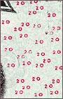

Вы видели двадцатидолларовые банкноты 2004 года выпуска? Казначейство США произвело еще одно обновление банкноты в 20 долларов США в попытке раз и навсегда остановить этих коварных фальшивомонетчиков. Особенностью банкноты является высокотехнологичные, разоблачающие фальшивомонетчиков элементы, такие как водяной знак, защитная сетка и меняющие цвет чернила. Банкноту также отличает неудачный дизайн.
Я не собираюсь здесь заниматься критикой лицевой стороны банкноты (мой друг Джефф сказал:"Она выглядит как будто на нее что-то пролили."). Вся суть в обратной стороне банкноты, которая сводит меня с ума.

Это маленькие двадцатки, беспорядочно разбросанные по белой области.
Предполагается, что они являются еще одним средством безопасности? ("Они НИКОГДА не смогут скопировать эту банкноту в 20 долларов ... посмотрите на эти двадцатки... они ПОВСЮДУ!") Они позволили практикантам разработать дизайн банкноты? ("Эй, а давай Джимми попробует!") Они были обеспокоены, что двадцатидолларовую банкноту могут перепутать с банкнотой в 10 долларов?
В них должно быть что-то большее. Моя теория такова: новые двадцатки содержат действующее на подсознание сообщение, которое можно получить при помощи соединения точек, подобно крошечным констелляциям. Так, возможно, двадцатки соединяются, формируя секретное сообщение, составленное с целью стимуляции экономики ("ТРАТЬ БОЛЬШЕ") или поднятия патриотизма ("МЫ №1").
Я не уверена, что удачно раскрыла шифр, поэтому прошу помощи у вас. Я призываю всех вас добыть новую двадцатидолларовую банкноту, соединить точки для отыскания сообщения на обратной стороне банкноты (предпочтительно карандашом) и отослать мне по почте для проверки. Вместе мы доберемся до сути.